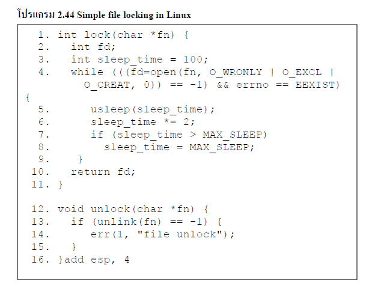

| Race conditions จะเป็นกระบวนการที่เป็นอิสระและไม่สามารถแก้ไขโดยการ synchronization เพราะ กระบวนการนี่ไม่ได้ใช้ร่วมกันกับ global data (เช่น ตัวแปร mutex) ชนิดนี้จะใช้กระแสควบคุมพร้อมทั้งยังสามารถทำข้อมูลให้ตรงกันโดยใช้ lock ไฟล์ได้ ตัวอย่าง มีสองฟังก์ชันที่ใช้กลไกการล็อคไฟล์ของลินุกซ์ การเรียกร้องให้ล็อค A() จะใช้ในการได้รับการล็อคและล็อคจะถูกปล่อยออกโดยการเรียกใช้ unlock () | ||
|

ซึ่งทั้ง lock() และ unlock() จะถูกส่งผ่าไปยังชื่อของแฟ้มที่ทำหน้าที่เป็น shared lock ของ object ซึ่งจะใช้ในกระบวนการ sharing และไดเร็กทอรี่ที่สามารถใช้ shared (directory/tmp เป็นที่นิยมที่ใช้เพื่อการนี้)แฟ้มล็อคจะถูกใช้เป็นพร็อกซี่สำหรับล็อคไฟล์ หากไฟล์ ที่มีอยู่ถูกล็อคหรือถูกจับและ ถ้าไฟล์ไม่ได้ล็อคอยู่จะถูกปล่อยออกมานั้นเอง
|
||